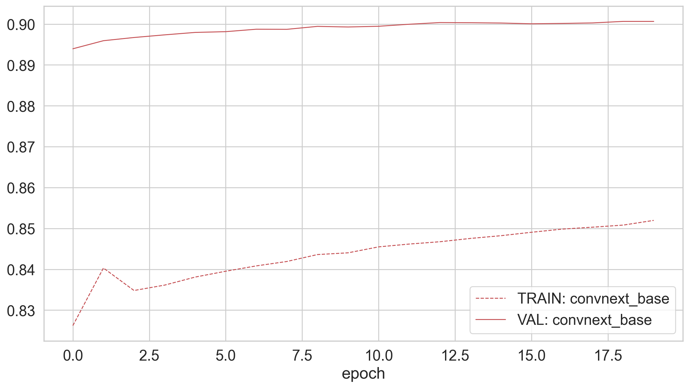

In this notebook, we initialize a pretrained model re-trained on the ‘bbox’ dataset and then fine-tune it on the retinotopic images from the ‘focus’ dataset. We then evaluate its performance on the validation set and visualize the training dynamics across epochs.
[1]:
import retinoto_py as fovea
model_name = 'convnext_base'
args = fovea.Params(do_fovea=True, model_name=model_name)
print(args)
Params(batch_size=32, num_workers=4, prefetch_factor=0, image_size=224, grid_size_ecc=161, grid_size_ang=309, do_mask=False, do_fovea=True, use_hexagonal_grid=True, rs_min=-3.5, rs_max=0.7, angle_start=-5.235987755982989, angle_margin=0.010166966516471823, mode='bilinear', padding_mode='zeros', model_name='convnext_base', num_epochs=20, subset_factor=1, optimizer_name='adamw', loss_name='CrossEntropyLoss', base_lr=1e-06, final_lr=1e-09, num_warmup_epochs=20, delta1=0.3, delta2=0.002, weight_decay=0.0001, label_smoothing=0.0005, do_full_training=True, do_augment=True, augment_proba=0.85, stochastic_depth_prob=0.6, seed=1998, shuffle=True, verbose=False)
learning the convnext_base on the ‘focus’ retinotopic images¶
[2]:
%ls -lh cached_data/45_*
-rw-r--r--@ 1 laurentperrinet staff 3,8K 7 août 18:04 cached_data/45_fovea_model_name=convnext_base_dataset=focus.json
-rw-r--r--@ 1 laurentperrinet staff 0B 18 août 18:56 cached_data/45_fovea_model_name=convnext_base_dataset=focus.lock
-rw-r--r--@ 1 laurentperrinet staff 1,0G 7 août 18:04 cached_data/45_fovea_model_name=convnext_base_dataset=focus.pth
[3]:
# %rm cached_data/45_focus_model_name* # FORCING RECOMPUTE
# %rm cached_data/45_focus_model_name*.lock # FORCING RECOMPUTE
[4]:
dataset = 'bbox'
init_model_filename = args.data_cache / f'32_fovea_model_name={args.model_name}_dataset={dataset}.pth'
[5]:
dataset = 'focus'
name = f'45_fovea_model_name={args.model_name}_dataset={dataset}'
model_filename, json_filename = fovea.do_learning(args, dataset, name, init_model_filename=init_model_filename)
Load JSON from pre-trained resnet cached_data/45_fovea_model_name=convnext_base_dataset=focus.json
cached_data/45_fovea_model_name=convnext_base_dataset=focus.pth: latest accuracy = 0.901
Evaluation on the validation dataset¶
[6]:
results = fovea.pd.read_json(args.data_cache / f'45_fovea_model_name={model_name}_dataset={dataset}.json')
print(model_name, dataset, '- Accuracy=', results.tail(1)['acc_val'].item())
convnext_base focus - Accuracy= 0.9006438942
[7]:
model_name, dataset, len(results)
[7]:
('convnext_base', 'focus', 20)
[8]:
results.tail(10)
[8]:
| epoch | i_image | total_image | loss_train | acc_train | acc_val | time | |
|---|---|---|---|---|---|---|---|
| 10 | 10 | 1351872 | 14870592 | 0.627516 | 0.845475 | 0.899451 | 59378.263756 |
| 11 | 11 | 1351872 | 16222464 | 0.622059 | 0.846165 | 0.899948 | 65323.821219 |
| 12 | 12 | 1351872 | 17574336 | 0.619140 | 0.846730 | 0.900358 | 71268.859738 |
| 13 | 13 | 1351872 | 18926208 | 0.616706 | 0.847539 | 0.900321 | 77220.414910 |
| 14 | 14 | 1351872 | 20278080 | 0.613561 | 0.848210 | 0.900246 | 83266.998062 |
| 15 | 15 | 1351872 | 21629952 | 0.609258 | 0.849049 | 0.900060 | 89212.563920 |
| 16 | 16 | 1351872 | 22981824 | 0.605366 | 0.849818 | 0.900147 | 95149.472370 |
| 17 | 17 | 1351872 | 24333696 | 0.602872 | 0.850295 | 0.900271 | 101086.510912 |
| 18 | 18 | 1351872 | 25685568 | 0.600331 | 0.850803 | 0.900644 | 107023.741250 |
| 19 | 19 | 1351872 | 27037440 | 0.597691 | 0.851956 | 0.900644 | 112965.034019 |
Plot learning evolution¶
[9]:
fig, ax = fovea.plt.subplots()
color = 'r'
lw = 1
json_filename = args.data_cache / f'45_fovea_model_name={model_name}_dataset={dataset}.json'
# model_filename, json_filename = fovea.do_learning(args, dataset, name)
df_train = fovea.pd.read_json(json_filename, orient='records')
ax = df_train.plot(x='epoch', y='acc_train',
c=color, ls='dashed', lw=lw,
grid=True, ax=ax, label='TRAIN: ' + model_name)
ax = df_train.plot(x='epoch', y='acc_val',
c=color, lw=lw,
grid=True, ax=ax, label='VAL: ' + model_name)
